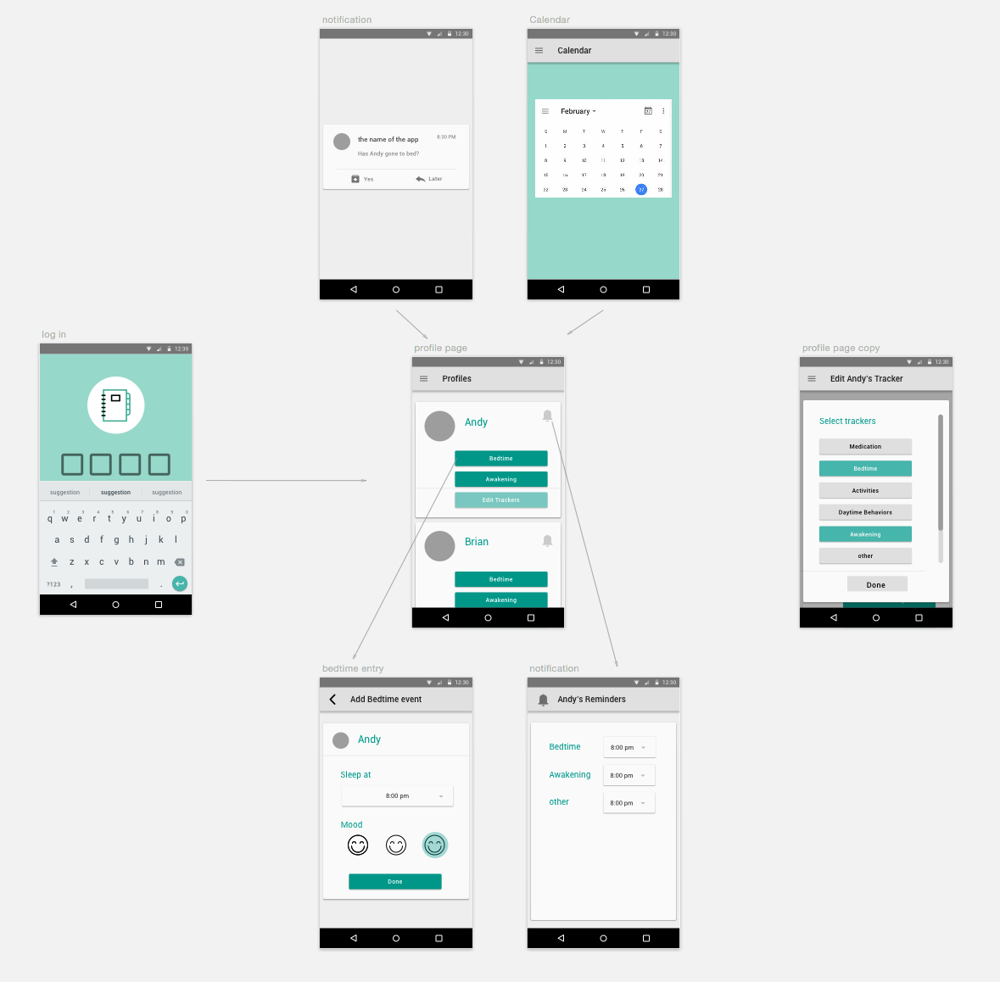

介紹
「唐氏症醫療照護」是 UBC 大學教授 Dr. Osman Ipsiroglu 對於兒童睡眠障礙（一個常見於唐氏症兒童的症狀）研究的一部份。 在進行研究時，醫生都會發放紙本表格讓家長回去填寫關於孩子一天的狀況，每天都要做紀錄。但事實上這麼做的效率很差。

在 醫生-病人-家屬 的三角關係裡，以往的做法由於紙本記錄效果不好，有以下缺陷：
在經過我們團隊跟教授還有家長作為 User group 的討論下，其目標如下
Wireframe 線框圖
為了達成上述兩個目標，「唐氏症醫療照護」分為 Web 跟 Ｍobile
兩個部分。
可以看到下面的圖：上面是 Web 版，負責展示相關的功能，下面 Mobile
版方便隨時隨地迅速紀錄。

桌上型電腦或平板檢視紀錄
手機快速紀錄每天狀態
Mockups 高擬真設計稿
在使用者第一次使用這個產品時，必須先使用 Web
版，建立病患的個人檔案。個人檔案中除了患者的基本資料，如出生年月日，還會有基本的一天作息，這會影響
手機 APP 在何時跳出引導使用者去紀錄狀況的通知。
設定好之後這些設定都會被同步到手機上。
在網頁版上面設定個人檔案
手機的 APP 被設計成可以在幾個點擊內就完成紀錄，APP 裡面的選項，包括就寢時間、當下情緒等都是經由醫生指定放入的選項。

在設定好的時間，手機會跳出通知，讓使用者去登錄資料
網頁版上會有詳細的藥物使用紀錄，這些雖然在一開始建檔時較為瑣碎，但可方便之後輸出跟分享給其他科別或不同醫院的醫生。

使用者可以在網頁上看到每一天詳細的紀錄，不同的紀錄會被分類在不同的分頁裡，用來呈現個別症狀的趨勢圖。比方說心情起伏、日間的活動狀況跟睡眠狀況。
這些紀錄都可以被輸出成 PDF，也有電子版本的分享功能。
使用者可以透過互動式的圖表檢視每天的紀錄，然後輸出成 PDF 交予他人